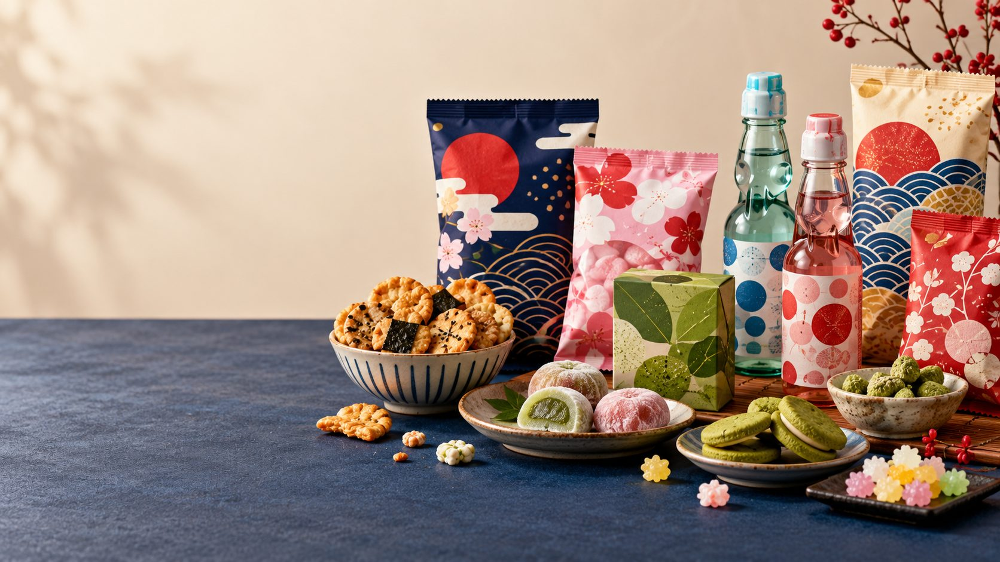
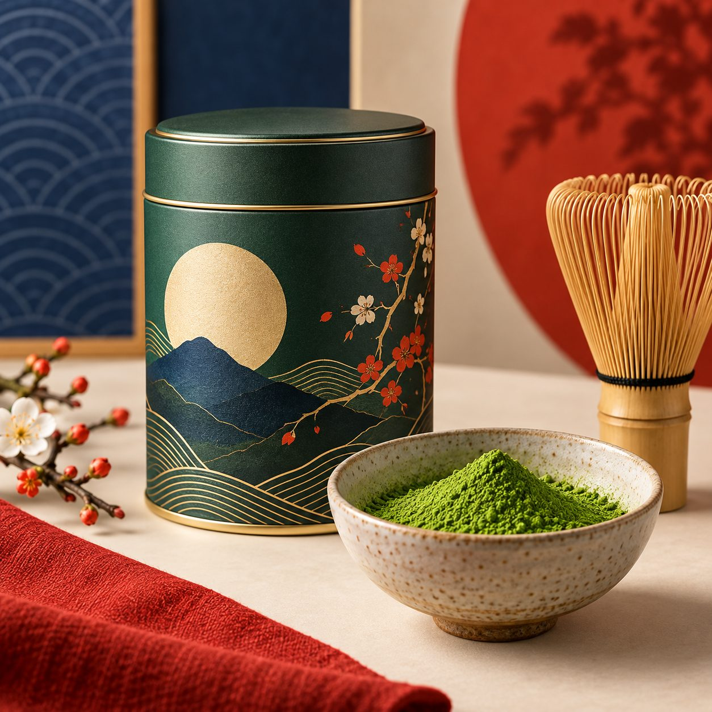
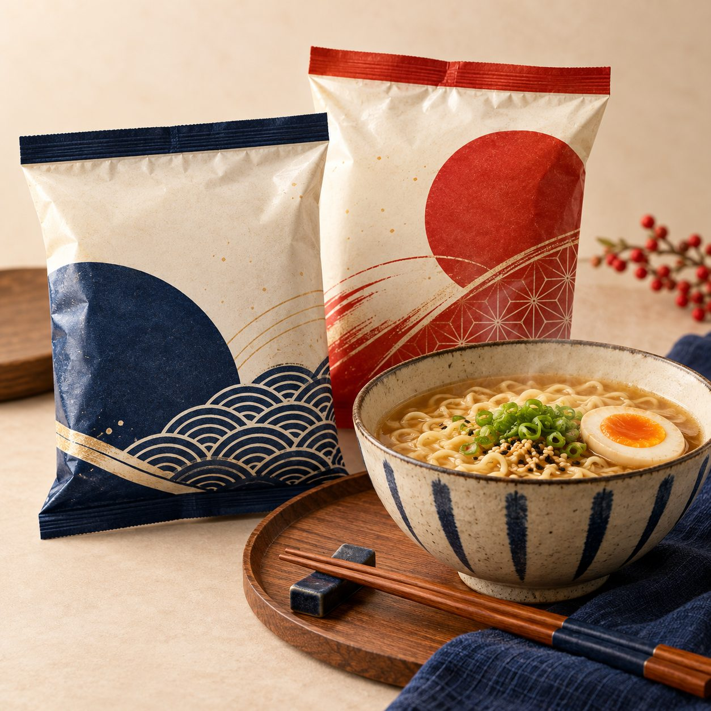

Visuel d’ambiance
Visuel d’ambianceExemple fictif · prix test
Bonbons fruités · sélection découverte
Une piste pour comparer textures et parfums.
Épicerie japonaise · vitrine d’étude
Snacks sucrés, matcha et ramen : trois portes d’entrée pour découvrir une sélection imaginée en classe. Comparez les idées, pas les paniers.
Prix, stocks et délais inventés à des fins pédagogiques.

01 / Une envie, une découverteCommencer par une envie
Choisissez une famille, puis comparez des exemples de fiches. Chaque parcours a sa page.

Lire une vitrine autrement
Chaque exemple présente une idée, un prix et une disponibilité inventés pour l’exercice. Les photos illustrent une ambiance et ne prouvent ni un produit vendu ni son origine.
Voir ce qui est réel, et ce qui ne l’est pas ↗Aperçu · données de test
Une proposition par univers. Rien ici ne peut être ajouté à un panier.
Visuel d’ambianceExemple fictif · prix test
Une piste pour comparer textures et parfums.

Visuel d’ambianceExemple fictif · prix test
Une entrée en matière pour les saveurs végétales.

Visuel d’ambianceExemple fictif · prix test
Pour commencer par une saveur réconfortante.